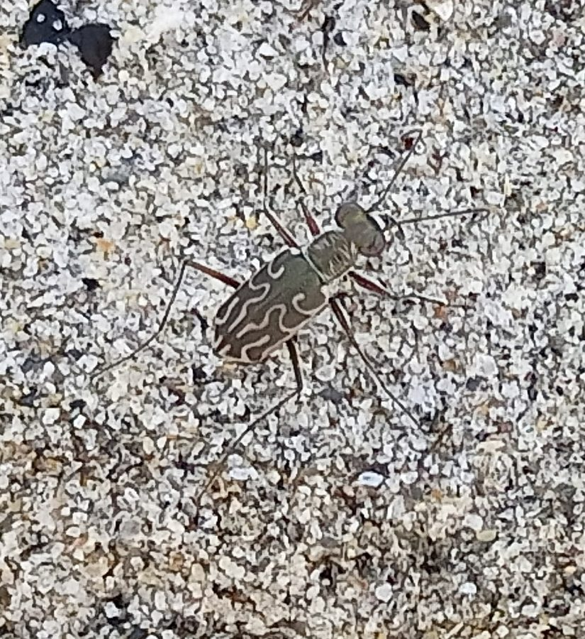

नसदार बाघ भृंगVeined Tiger Beetle
Cylindera venosa · Carabidae · INS-0241

- Scientific name वैज्ञानिक नाम
- Cylindera venosa (Kollar, 1836)
- Family कुल
- Carabidae
- Hindi हिंदी
- नसदार बाघ भृंग
- Local names स्थानीय नाम
- veined tiger beetle, nasdar bagh bhrung, cylindera venosa, veined tiger beetle
- Status here यहाँ की स्थिति
- native
- Movement आवागमन
- Resident, here all year
- Known from कहाँ दर्ज
- Others have published records from the wider Awadh–Purvanchal plain, none yet from Basti–Ayodhya अवध–पूर्वांचल से दूसरों के प्रकाशित अभिलेख, बस्ती–अयोध्या से अभी नहीं
- IUCN IUCN
- not evaluated
- Review समीक्षा
- not yet reviewed
When to look कब देखें
Present all year. साल भर मौजूद।
Tell it apart from इनसे अलग पहचानें
नसदार बाघ भृंग / Veined Tiger Beetle
Cylindera venosa (Kollar, 1836) — Carabidae
नसदार बाघ भृंग — नदियों के रेतीले और कंकरीले किनारों पर धूप में पाया जाने वाला एक छोटा शिकारी भृंग। इसके कत्थई-तांबई पंखों पर सफेद रंग की चौड़ी और आपस में जुड़ी हुई लकीरें होती हैं, जो देखने में पत्तों की नसों (शिराओं) जैसी लगती हैं। यह रेत पर बहुत तेज दौड़ता है और धूप निकलते ही नन्हे कीड़ों का शिकार करने लगता है।
Quick Identification त्वरित पहचान
| Feature | Description |
|---|---|
| Habit | Small, fast-running tiger beetle frequenting sandy and gravelly riverbeds |
| Coloration | Bronze, greenish-coppery, or brownish-black with metallic lustre |
| Elytral pattern | Prominently marked with confluent, vein-like ivory-white longitudinal bands |
| Labrum | Pale testaceous, short and transverse with small dark apical teeth |
| Locomotion | Scurrying sprints across river sand, flying short distances when alarmed |
Field tip: Inspect sandy patches and gravel bars along the Kuwana and Ghaghara rivers on sunny mornings for small bronze beetles with bold vein-like white stripes.
हिंदी — कैसे पहचानें: पंखों पर नसों जैसी जुड़ी हुई चौड़ी सफेद धारियां, कत्थई-तांबई रंग, और नदी की रेत पर बहुत तेज दौड़ना।
Morphology आकारिकी
Measurements from Fowler (1912):
| Measurement | Value | Source |
|---|---|---|
| Body length | 9–10 mm | Fowler (1912) |
Adult description: A small, neatly formed tiger beetle. Head metallic bronze or greenish, finely and densely striate between the large prominent eyes; labrum transverse, pale yellowish with dark anterior teeth. Mandibles slender, sickle-shaped, testaceous with dark sharp internal denticles. Pronotum subquadrate, slightly narrowed behind, transversely rugulose with metallic reflections.
Elytra: Oblong, densely punctate-granulate, coppery-bronze to dark olive-brown. The maculation is characteristically bold and confluent: the humeral lunule extends inward and connects with a broad, longitudinal vein-like median band that reaches near the suture, while the apical lunule is complete and sometimes confluent with the middle band, producing a striking reticulate or veined appearance.
Venter & Appendages: Beneath metallic green and blue with dense white pubescence laterally; legs long, slender, coppery with spinose tarsi.
हिंदी: इसकी लंबाई 9 से 10 मिमी होती है। इसके पंखों पर सफेद रंग की धारियां आपस में मिलकर नसों जैसा जाल बनाती हैं। इसके जबड़े मुड़े हुए और बहुत तेज होते हैं।
Behaviour & Ecology व्यवहार और पारिस्थितिकी
Cylindera venosa is diurnal and heliophilous, depending on direct sunlight to maintain the high body temperatures necessary for hunting.
It inhabits river sandbars and gravel beds, running in quick bursts over changing terrain. The bold veined pattern provides disruptive crypsis, visually breaking the insect's outline against mixed river sand and rounded pebbles. When approached, it takes flight instantly, flying four to six metres in a low arc before settling back onto the sand facing the pursuer.
Larvae dwell in vertical burrows in moist, fine-grained sand along river margins, ambushing crawling micro-arthropods.
हिंदी: यह कीड़ा धूप में रेत पर शिकार करता है। पंखों की नसों जैसी धारियां कंकड़-पत्थरों के बीच इसे छिपाए रखती हैं। खतरा होने पर यह तुरंत उड़कर थोड़ी दूर जाकर मुड़कर बैठता है।
Life Cycle / Phenology जीवन चक्र
| Season / Month | Stage & Activity |
|---|---|
| April–May (Summer) | Adults emerge on exposed sandy riverbars under warm sunshine |
| June–July (Monsoon) | Mating and egg-laying in moist sand depressions along riverbanks |
| August–September | Larvae develop in vertical burrows above regular water level |
| October–November | Larvae complete growth before seasonal cooling; some adults remain active |
| December–March (Winter) | Overwintering primarily as mature grubs in deep subterranean burrows |
Univoltine across the Gangetic drainage, with adult surface activity concentrated during the pre-monsoon and monsoon seasons.
हिंदी: गर्मियों में यह नदी किनारे बाहर निकलता है। बरसात में मादा रेत में अंडे देती है। इसके बच्चे रेत के अंदर बिल में रहते हैं और जाड़ा जमीन के अंदर बिताते हैं।
Host Plants or Prey आहार
- Adult Prey: Small riparian insects including midges, small shore beetles, ants, and springtails.
- Larval Prey: Surface-crawling micro-invertebrates passing the burrow entrance.
- Vegetation Use: Strictly predatory; uses riverine grasses like munja grass solely as windbreaks.
हिंदी: यह पूरी तरह मांसाहारी है। यह नदी किनारे के नन्हे कीड़ों, चींटियों और मक्खियों को खाता है।
Predators / Natural Enemies शत्रु
- Shorebirds: Sandpipers, wagtails, and plovers forage along riverbars, taking adults.
- Invertebrates: Robber flies capture flying adults; wolf spiders ambush beetles on sand.
- Parasitoids: Tiphiid wasps parasitize grubs inside sandy burrows.
हिंदी: नदी किनारे की चिड़ियां, शिकारी मक्खियां और बड़ी मकड़ियां इनका शिकार करती हैं।
Agricultural / Human Relevance कृषि प्रासंगिकता
- Beneficial predator: Naturally suppresses small insect populations along riverbanks and riparian fields.
- Bioindicator: Sensitive to riverbed sand mining and riparian habitat degradation.
- Harmless: Completely harmless to crops and humans.
हिंदी: यह नदी के किनारे हानिकारक कीड़ों को खाकर पर्यावरण संतुलन बनाए रखता है। यह फसलों के लिए बिल्कुल सुरक्षित है।
Expected Locally स्थानीय रूप से अपेक्षित
Not a field record. Written from published accounts for eastern Uttar Pradesh. No confirmed local sighting yet — if you have seen it, that is what the atlas needs.
अभी तक स्थानीय पुष्टि नहीं। यह विवरण प्रकाशित स्रोतों से है, किसी अवलोकन से नहीं।
Expected along the sandy shores, emergent bars, and gravelly margins of the Ghaghara, Rapti, and Kuwana rivers across Basti, Ayodhya, and Sant Kabir Nagar. GBIF holds published records from the wider Awadh–Purvanchal plain, none yet from Basti–Ayodhya. A first local record would be a photograph of an adult on sand showing the veined elytral markings, submitted through the About page.
Distribution वितरण
Global range: Native across South Asia, from northern India and Nepal to Bangladesh.
In India: Distributed across the Indo-Gangetic river system, Assam, and northern river basins (Fowler 1912).
In Uttar Pradesh: Distributed along sandy river corridors across the state.
In Basti district / eastern UP: Expected along the Ghaghara and Kuwana riverbeds.
हिंदी: यह भृंग भारत और नेपाल की नदियों के रेतीले किनारों पर पाया जाता है। उत्तर प्रदेश की प्रमुख नदियों में इसकी उपस्थिति है।
Research Questions शोध प्रश्न
- How does Cylindera venosa partition sandy riverbed habitat with sympatric Lophyra striolata in Basti? / बस्ती में नदियों के रेतीले किनारों पर यह भृंग अन्य बाघ भृंगों के साथ अपने क्षेत्र का बंटवारा कैसे करता है?
- What is the effect of excessive siltation from agricultural runoff on larval burrow density? / खेतों से बहकर आने वाली मिट्टी का इसके बिलों की संख्या पर क्या प्रभाव पड़ता है?
- What is the sprinting speed over wet versus dry river sand? / गीली और सूखी रेत पर इसके दौड़ने की गति में क्या अंतर आता है?
- How do adults respond to sudden water level changes during early monsoon rains? / बरसात में अचानक नदी का जलस्तर बढ़ने पर इसके वयस्क कैसे सुरक्षित रहते हैं?
- Can village children recognize the veined pattern on its back while it is resting on river gravel? / क्या ग्रामीण बच्चे कंकड़ों के बीच बैठे इस कीड़े की नसों जैसी धारियां पहचान सकते हैं?
Similar Species मिलती-जुलती प्रजातियाँ
| Species | How to tell apart | हिंदी |
|---|---|---|
| Lesser Tiger Beetle (Cylindera minuta) | Smaller; elytral markings narrower, fragmented, and not vein-like | छोटा आकार (7-9 मिमी), पंखों पर पतले अलग-अलग निशान |
| Striolate Tiger Beetle (Lophyra striolata) | Markings form thin wavy longitudinal striations rather than broad confluent veins | बारीक लहरदार धारियां, नसों जैसी चौड़ी धारियां नहीं |
| Angulate Tiger Beetle (Cicindela angulata) | Larger; markings form isolated angular bands, not confluent veins | बड़ा आकार (12-15 मिमी), अलग-अलग कोणीय धारियां |
Field rule: A small bronze tiger beetle on river sand with broad, confluent ivory-white markings resembling leaf veins identifies Cylindera venosa.
Taxonomy & Classification वर्गीकरण
Original description. Described by Vincenz Kollar in 1836 as Cicindela venosa in Annals of the Vienna Museum of Natural History, vol. 1.
Subspecies. Monotypic across the northern Indian river basins; recognized without named subspecies partitions.
Family and order placement. Placed in the ground beetle family Carabidae, subfamily Cicindelinae, in the order Coleoptera.
IUCN status rationale. Not evaluated on the IUCN Red List; widely distributed along major river drainage systems across northern South Asia.
हिंदी: विन्सेन्ज कोलार ने 1836 में इसका पहला वैज्ञानिक विवरण दिया था। यह कैराबिडी कुल का सदस्य है।
Photo Gallery फोटो गैलरी
No photos yet — add field photos to media/species/veined_tiger_beetle/ and run node scripts/sync_photos.js.
Photos needed आवश्यक फोटो
- [ ] Adult running on river sand showing veined wing pattern (रेत पर दौड़ता नसदार भृंग)
- [ ] Close-up of dorsal pattern in natural light (पंखों के निशान का क्लोज-अप)
- [ ] Specimen resting on river gravel (कंकड़ पर बैठा वयस्क)
References संदर्भ
- Kollar, V. (1836). Annals of the Vienna Museum of Natural History, vol. 1. Vienna.
- Fowler, W.W. (1912). The Fauna of British India, including Ceylon and Burma: Coleoptera: General Introduction and Cicindelidae and Paussidae, p. 388. Taylor and Francis, London.
- Acciavatti, R.E. & Pearson, D.L. (1989). The tiger beetle genus Cicindela (sensu lato) of India and adjacent regions. Annals of Carnegie Museum, 58, vol. 58.
- Pearson, D.L., Wiesner, J., Acciavatti, R.E., Uniyal, V.P. & Anichtchenko, A. (2020). A Field Guide to the Tiger Beetles of India: Identification and Biology of the Cicindelidae. Bishen Singh Mahendra Pal Singh, Dehradun.
- Andrewes, H.E. (1930). Catalogue of Indian Insects: Part 18, Carabidae. Government of India, Calcutta.
- GBIF Occurrence Data — Cylindera venosa (Kollar, 1836), India (2025).
Source file: species/fauna/insects/veined_tiger_beetle.md